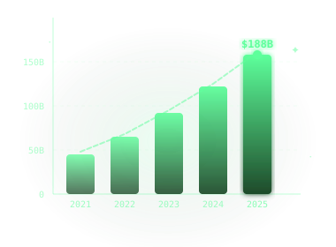

O crescimento dos
Streamers Gamers
Nos últimos anos, o mercado de games e criação de conteúdo digital tem apresentado um crescimento significativo. Plataformas de streaming se tornaram espaços importantes não apenas para entretenimento, mas também para geração de renda por parte de criadores de conteúdo.
Atualmente, streamers podem monetizar suas transmissões de diversas formas, como inscrições de seguidores, doações enviadas pelo público durante as lives, parcerias com marcas e receitas provenientes de anúncios exibidos nas plataformas. Esse modelo de monetização tem incentivado cada vez mais pessoas a iniciarem suas atividades no universo do streaming.
Entre as plataformas mais populares estão Twitch, YouTube Gaming, Kick e TikTok Live, cada uma oferecendo diferentes formas de monetização e atraindo milhões de usuários ao redor do mundo. A tabela a seguir apresenta algumas dessas plataformas e seus principais modelos de monetização.
| Plataforma | Tipo de Monetização | Popularidade |
|---|---|---|
| T Twitch | Inscrições, doações, anúncios | Muito alta |
| ▶ YouTube Gaming | Anúncios, super chats | Alta |
| K Kick | Doações, parcerias | Crescendo |
| ♪ TikTok Live | Presentes virtuais | Alta |
Pesquisa de Aplicação
O mercado de games vem crescendo de forma consistente e se consolidando como um dos principais segmentos da economia digital. Segundo a Newzoo, o mercado global de jogos deve alcançar cerca de US$ 188,8 bilhões em 2025, com aproximadamente 3,6 bilhões de jogadores no mundo. Esses números mostram não apenas a força do setor, mas também o tamanho da comunidade conectada ao universo gamer, que assim como os números, tendem a crescer cada vez mais.
Dentro desse cenário, o streaming de jogos se tornou uma parte importante da experiência de muitos jogadores e criadores de conteúdo. Plataformas como Twitch, YouTube Gaming, Kick e TikTok Live permitem que streamers criem comunidades, compartilhem conteúdo ao vivo e, em muitos casos, transformem essa atividade em fonte de renda.

Além do alcance e da visibilidade, essas plataformas oferecem diferentes formas de monetização. Na Twitch, por exemplo, criadores podem ganhar com recursos como inscrições e outras ferramentas de monetização para afiliados e parceiros. No YouTube, transmissões ao vivo podem gerar receita por meio de anúncios, Super Chat, Super Stickers e membros do canal.
Esse modelo abre oportunidades para que streamers iniciantes comecem a monetizar seu conteúdo, mas também cria um novo desafio: o controle financeiro. Quando a renda passa a vir de várias fontes diferentes, como doações, inscrições, anúncios e parcerias, muitos criadores encontram dificuldade para organizar entradas, saídas, investimentos e até obrigações como impostos. Essa desorganização pode prejudicar a visão real de faturamento, lucro e crescimento do canal.
Foi a partir dessa necessidade que surgiu a ideia do StreamLedger. O projeto propõe uma plataforma voltada para streamers iniciantes, permitindo acompanhar faturamento, custos, lucro, movimentações recentes e outras informações financeiras importantes em um só lugar. Assim, a pesquisa de mercado não apenas contextualiza o universo gamer, mas também justifica a criação de uma solução pensada para tornar a atividade de streaming mais organizada, profissional e sustentável.